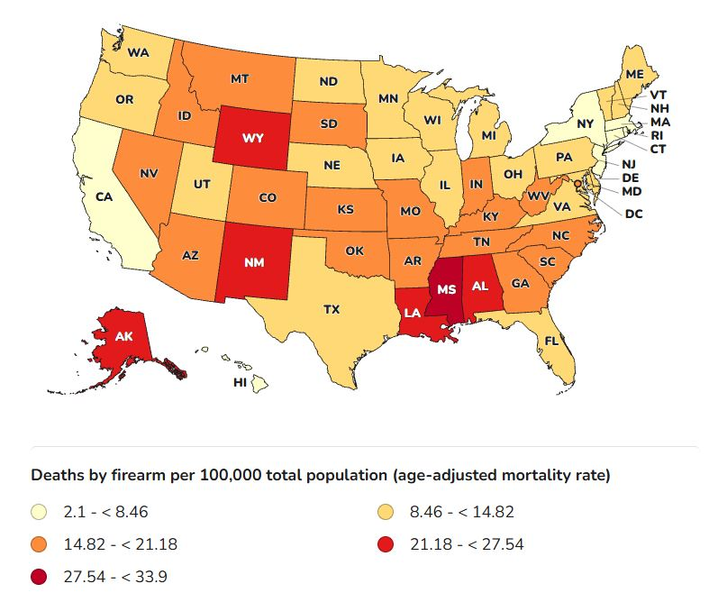

1. California
2. New Jersey
3. Massachusetts
4. Connecticut
5. Hawaii
6. New York
7. Maryland
8. Illinois
9. Rhode Island
10. Michigan

Screenshotted from the CDC (Source)1. Hawaii
2. Massachusetts
3. Rhode Island
4. New York
5. New Jersey
6. Connecticut
7. Minnesota
8. Iowa
9. California
10. Maine
9 deaths in church shooting. Gunman obtained firearms with a background check despite having a drug arrest that should have kept him from purchasing due to a limit of how long the FBI’s limit of storing data.
26 deaths and 20 injured. The Air Force failed to enter his court-martial for domestic violence into the FBI database.
7 people killed and 25 injured. The gunman failed a background check in a previous purchase but was able to buy a firearm through a private sale.